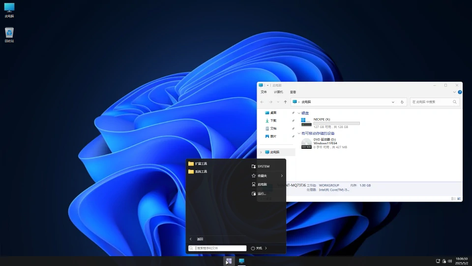

PE 系统的制作
一直想给 U 盘换个纯净点的 PE 系统。结果发现这个领域似乎被几个自动构建 PE 盘的工具垄断了。在某个偏僻的角落，我发现了这个还算不错的方案 ...这篇文章使用了大神「深谷憂狼」的批处理脚本。感谢各位大佬提供的技术支持！
准备
Windows11PE64一键制作21H2至Dev通用版工具-2025http://wuyou.net/forum.php?mod=viewthread&tid=435134&extra=&page=1
https://msdn.itellyou.cn/ （需要登录）
不太推荐 PowerISO 和 UltraISO，要有所谓的“序列号”才能正常使用。
制作过程存在一定危险系数，建议在虚拟机中进行构建和调试。
开始
首先要说说这个 “面白い” 脚本。目录树
┣━━ [WIN11PE64]
┃ ┣━━ [files]
┃ ┣━━ [MakeISO] # 大致是最终生成的 ISO 文件的内容
┃ ┣━━ [OEM]
┃ ┣━━ [reg] # PE 系统的注册表
┃ ┣━━ [temp] # 储存构建时所用的临时文件
┃ ┣━━ [tools] # 这是主程序运行所需的工具库
┃ ┣━━ [winpe]
┃ ┗━━ [zh-CN] # PE 系统的核心文件
┗━━ WIN11PE64一键制作工具通用版.exe
主程序是那个 .exe 文件。由原始批处理文件（70KB 左右）经过 BatchEncryption 22 层加密后，再转为 .exe 程序（830 KB）制成。
别的不说，工具本身还是蛮好用的。制作过程非常简单，挂载了原始 ISO 后直接运行主程序，几分钟后就可以得到 PE 系统的镜像文件了。本文以 Win11 22H2 版本为例进行构建。
个性化
这里列出了几个可以 DIY 的地方，请大家自行参考。WIN11PE64\MakeISO\MakeISOGD4.dll
开机后的一个选择页面可以在其中的 MakeISO\boot\grub\MENU 中进行修改。改成如下代码后，可跳过该页面。
MENU
find --set-root /bootmgr
clear
chainloader /bootmgr
clearWIN11PE64\zh-CN\zh-CN-22H2.dll
主程序会用这边的资源覆盖原始镜像中的部分系统文件。
Program Files
添加自己的软件（最好是免安装版）
Users\Default\AppData\Roaming\Microsoft\Windows\Start Menu
开始菜单固定的快捷方式
Windows\Cursors
鼠标指针（注意文件命名）
Windows\System32\winre.jpg
壁纸
Windows\System32\pecmd.ini
这个是 pecmd.exe 在开机后自动执行的命令列表，可以进行显示文字、添加快捷键、修改屏幕分辨率等操作。
启动页面 “但愿人长久，千里共婵娟” 等提示语就藏在这里。
WIN11PE64\reg\22H2
WIN11PE64\reg\22H2\import-def\pe-def.reg
[HKEY_LOCAL_MACHINE\PE-DEF\Software\StartIsBack]
居中任务栏 透明任务栏 任务栏·、开始菜单的颜色调整
[HKEY_LOCAL_MACHINE\PE-DEF\Software\Microsoft\Windows\CurrentVersion\Explorer\Advanced]
资源管理器
WIN11PE64\reg\22H2\import-soft\pe-soft.reg
[HKEY_LOCAL_MACHINE\PE-SOFT\Microsoft\Windows NT\CurrentVersion]
系统和制造商的名字
[HKEY_LOCAL_MACHINE\PE-SOFT\Microsoft\Windows\CurrentVersion\OEMInformation]
机型和制造商的名字
制作 PE U 盘
其实很简单的啦！随便找一个制作 PE 盘的工具，咱只用他 U 盘分区的功能。把 U 盘分区做好后，清空 U 盘 EFI 分区里的脏东西。把之前生成的 ISO 文件解压后放到里面就可以啦。
建议实体机操作前先用虚拟机 debug 一下，免得遭受蓝屏打击。
最终效果
安装了一个 Everything.exe 和 世界之窗浏览器（竟然看不了 B 站，呜呜呜 ...）总共 427 MB别的都还不错，就是不知道为什么不能连接扬声器。
